02 Y 圖 — 階層設計與 EDA 流程
由上而下分解、由下而上合成，以及 EDA 工具在 Y 圖上的位置。原始投影片 22 張，估計閱讀 35 分鐘。
學習目標
- 用「樹」與「嵌套區塊」兩種畫法說明同一個階層關係。
- 說出測試平台 (testbench) 的兩端各做什麼事，以及對應的 Verilog 寫法。
- 比較 Top-down、Bottom-up 與 Middle-out／Ends-In／Hybrid 的適用場合。
- 解釋為什麼 4 位元加法器不適合用單一真值表實作（29 = 512 列）。
- 完整走過 4 位元加法器「由下而上」的八個步驟：佈局 → 標準單元 → 符號 → 閘級 → 半加器 → 全加器 → 漣波進位鏈。
- 在 Y 圖上指出三個觀點與抽象層級，並說明 modularization、partitioning、synthesize、library、sim、ver 各自的位置。
2.1 課程導覽與快速教學規劃
投影片 p.1–2
本章封面日期為 2022/09/22，是 Lec. 02「View, Level, Hierarchy」。
選用的編譯器與模擬器（p.2）
投影片列出要挑 3 個 Verilog 編譯器做教學 (Select 3 Verilog-Compilers for tutorial)：
- SynaptiCAD's Verilogger Pro
- Candence's VerilogXL or NCSim
- ModelSim
- Altera's Quartus II
原文寫 Candence's，正確廠商名為 Cadence。另外標題說「Select 3」但實際列了 4 項，兩處都照原文保留。
要練習與體會的三件事
- Hierarchy design orientation（階層設計的方向）
- Design styles and views（設計風格與觀點）
- Testfixture (Testbench) Construction（測試平台的建構）
投影片另提供課程網站上的影片連結。
p.2 畫面上的網址寫 HDL2015，但超連結實際指向 HDL2014，兩者不一致且都已失效。本網站為離線版，不放外部連結。
2.2 階層、樹與嵌套區塊
投影片 p.3
這一頁用同一個階層關係畫出兩種圖：上面是樹，下面是嵌套的方塊。重點是：設計樹與嵌套區塊是同一件事的兩種觀看方式。
在 Verilog 裡，這個關係就是模組實體化：Top 模組內部寫 S s1(...); T t1(...);，S 模組內部再寫 U u1(...);。樹的「父子」等於嵌套的「包含」。
2.3 測試平台 Testbench 的概念
投影片 p.4
整張圖是一個大圓角方框（testbench / testfixture），把待測電路包在裡面。左邊畫一台訊號產生器，右邊畫一台示波器／邏輯分析儀。
- 左端（輸入）：用
initial區塊當訊號產生器，也兼做邏輯分析（原文：initial block/as signal generator/and logic analyzer）。 - 中央：
Synthesizable Hardware— 真正要合成的電路，就是 §2.2 的那棵階層樹。 - 右端（觀察）：
$display、$monitor與波形，like a scope or logic analyzer。
關鍵分界：testbench 本身不需要可合成，可以用 #delay、$display 這些只在模擬有意義的語法；中央那塊才要遵守可合成的限制。
2.4 階層設計的方向
投影片 p.5
投影片上下各畫一棵樹：上面那棵箭頭朝上（Bottom-up），下面那棵箭頭朝下（Top-down）；中間用一個大括號指向三種折衷策略。
| 方向 | 投影片列出的特性 |
|---|---|
| Bottom-up 由下而上 | Long-term library construction（長期建立程式庫） Easy modularization（容易模組化） |
| 折衷 | Middle-out（由中間向外） Ends-In（由兩端向內） Hybrid (Greedy) : Human thinking（混合／貪婪，符合人的思考方式） |
| Top-down 由上而下 | Shorten design phase（縮短設計週期） Should be modularized carefully（必須小心模組化） Ideal EDA Flow（理想的 EDA 流程） |
兩個極端各有代價：由下而上累積的元件庫可以長期重用，但不保證拼得出你要的系統；由上而下最快切出系統架構，但如果模組切得不好，底層會做不出來或效能很差。實務上多半是 Hybrid。
2.5 為什麼不能全部攤平：4 位元加法器的真值表
投影片 p.6
投影片的兩點說明（照錄原文）：
- Can designed as a primitive cell optimized to SOP (or POS) forms using McKlusky method (or K-Map)
- Time Complexity: Incredibly exponentially increasing!
4 位元加法器有 9 個輸入（A3–A0、B3–B0、Ci）與 5 個輸出（Co、S3–S0），所以真值表有 29 = 512 列。投影片用一條粗黃箭頭從「Time Complexity」掃到表格右上角，強調這個爆炸性成長。
| Implicant | A3 | A2 | A1 | A0 | B3 | B2 | B1 | B0 | Ci | Co | S3 | S2 | S1 | S0 |
|---|---|---|---|---|---|---|---|---|---|---|---|---|---|---|
| 0 | 0 | 0 | 0 | 0 | 0 | 0 | 0 | 0 | 0 | 0 | 0 | 0 | 0 | 0 |
| 1 | 0 | 0 | 0 | 0 | 0 | 0 | 0 | 0 | 1 | 0 | 0 | 0 | 0 | 1 |
| 2 | 0 | 0 | 0 | 0 | 0 | 0 | 0 | 1 | 0 | 0 | 0 | 0 | 1 | 0 |
| 3 | 0 | 0 | 0 | 0 | 0 | 0 | 0 | 1 | 1 | 0 | 0 | 0 | 1 | 1 |
| 4 | 0 | 0 | 0 | 0 | 0 | 0 | 1 | 0 | 0 | 0 | 0 | 1 | 0 | 0 |
| 5 | 0 | 0 | 0 | 0 | 0 | 0 | 1 | 0 | 1 | 0 | 0 | 1 | 0 | 1 |
| 6 | 0 | 0 | 0 | 0 | 0 | 0 | 1 | 1 | 0 | 0 | 0 | 1 | 1 | 0 |
| 7 | 0 | 0 | 0 | 0 | 0 | 0 | 1 | 1 | 1 | 0 | 0 | 1 | 1 | 1 |
| : | ||||||||||||||
| : | ||||||||||||||
| 498 | 1 | 1 | 1 | 1 | 1 | 0 | 0 | 1 | 0 | 1 | 0 | 0 | 0 | 1 |
| 499 | 1 | 1 | 1 | 1 | 1 | 0 | 0 | 1 | 1 | 1 | 0 | 0 | 1 | 0 |
| 500 | 1 | 1 | 1 | 1 | 1 | 0 | 1 | 0 | 0 | 1 | 0 | 0 | 1 | 1 |
| 501 | 1 | 1 | 1 | 1 | 1 | 0 | 1 | 0 | 1 | 1 | 0 | 1 | 0 | 0 |
| 502 | 1 | 1 | 1 | 1 | 1 | 0 | 1 | 1 | 0 | 1 | 0 | 1 | 0 | 1 |
| 503 | 1 | 1 | 1 | 1 | 1 | 0 | 1 | 1 | 1 | 1 | 0 | 1 | 1 | 0 |
| 504 | 1 | 1 | 1 | 1 | 1 | 1 | 0 | 0 | 0 | 1 | 0 | 1 | 1 | 1 |
| 505 | 1 | 1 | 1 | 1 | 1 | 1 | 0 | 0 | 1 | 1 | 0 | 0 | 0 | 0 |
| 506 | 1 | 1 | 1 | 1 | 1 | 1 | 0 | 1 | 0 | 1 | 0 | 0 | 0 | 1 |
| 507 | 1 | 1 | 1 | 1 | 1 | 1 | 0 | 1 | 1 | 1 | 0 | 0 | 1 | 0 |
| 508 | 1 | 1 | 1 | 1 | 1 | 1 | 1 | 0 | 0 | 1 | 0 | 0 | 1 | 1 |
| 509 | 1 | 1 | 1 | 1 | 1 | 1 | 1 | 0 | 1 | 1 | 0 | 1 | 0 | 0 |
| 510 | 1 | 1 | 1 | 1 | 1 | 1 | 1 | 1 | 0 | 1 | 0 | 1 | 0 | 1 |
| 511 | 1 | 1 | 1 | 1 | 1 | 1 | 1 | 1 | 1 | 1 | 0 | 1 | 1 | 0 |
這張表是課堂上用來說明「512 列有多可怕」的示意圖，部分位元組合在算術上並不自洽（例如第 498 列 A=1111、B=1001、Ci=0，和卻列成 S=0001；第 505 列 A=1111、B=1100、Ci=1 卻給 Co=1、S=0000）。此處照原文重現，請勿當成正確的加法器真值表使用。
原文 Can designed as 少了 be，McKlusky 的標準拼法是 Quine–McCluskey。照原文保留。
2.6 由上而下分析
投影片 p.7
既然攤平不可行，就改用階層。這一頁示範 Top-down Analysis：每一層先寫出「行為觀點」的式子，再用「結構觀點」把它分解成更低層的方塊，一路遞迴到程式庫裡現成的單元為止。
葉節點的 AND 與 XOR 旁邊，投影片都註明 Can be found in physical library — 遞迴到這裡就停了，因為程式庫裡已經有現成的實體單元。
2.7 由下而上合成八步
投影片 p.8–15
這八張投影片其實是同一張圖的動畫分鏡，從最底層的實體佈局一路包裝成 4 位元漣波進位加法器。請依序瀏覽；每一步都標出它在 Y 圖上屬於哪個觀點。
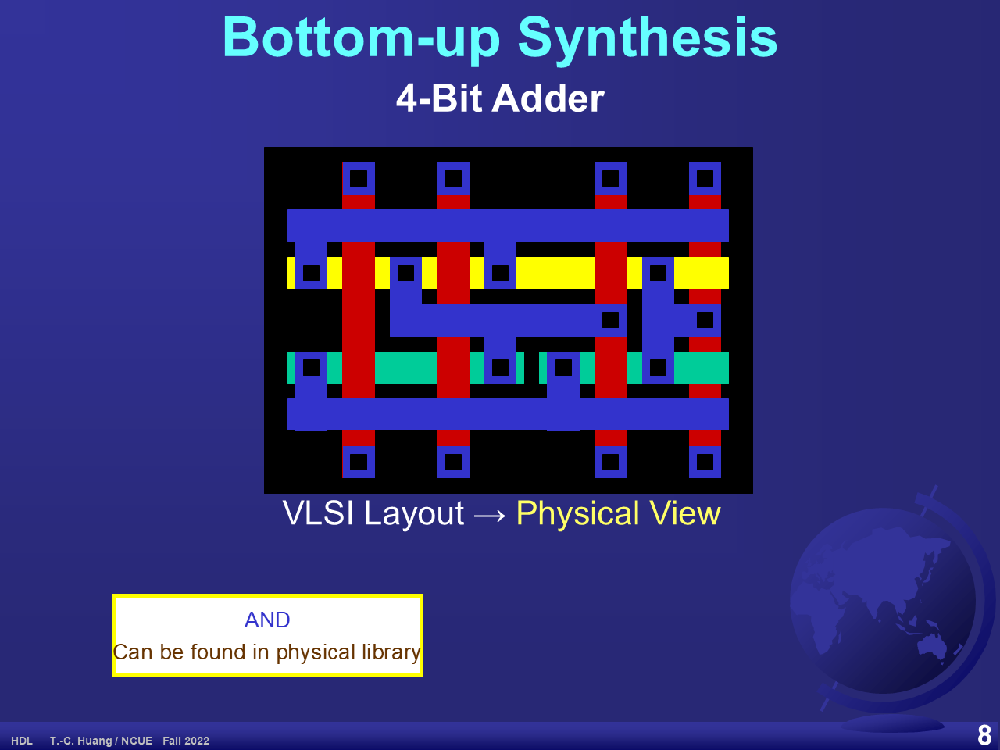
VLSI Layout → Physical View。投影片 p.8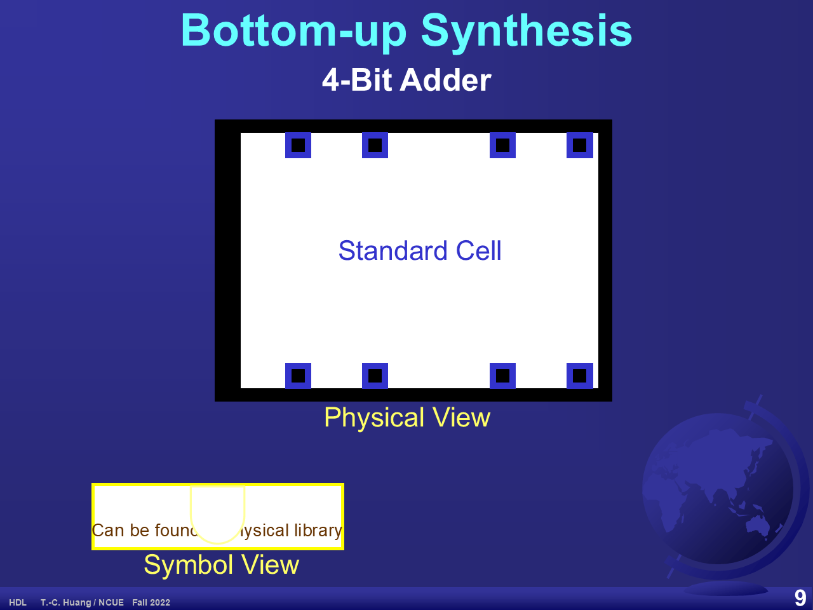
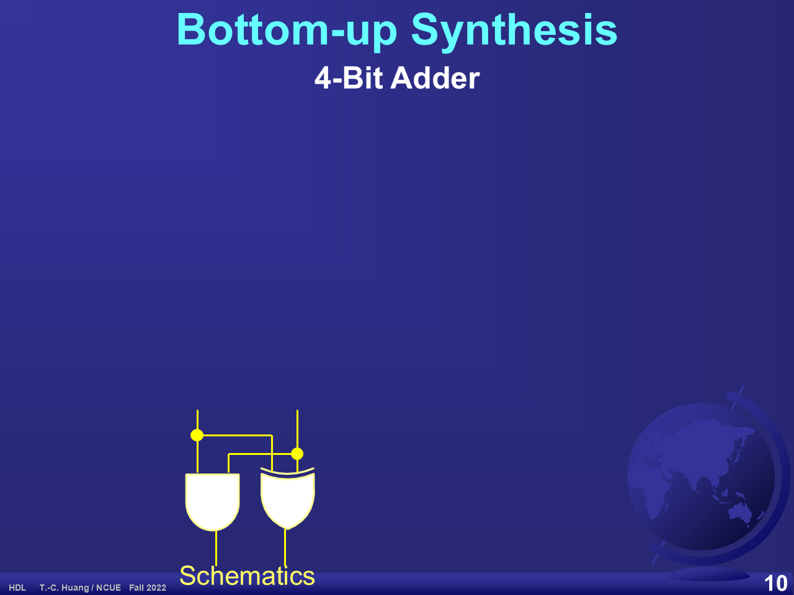
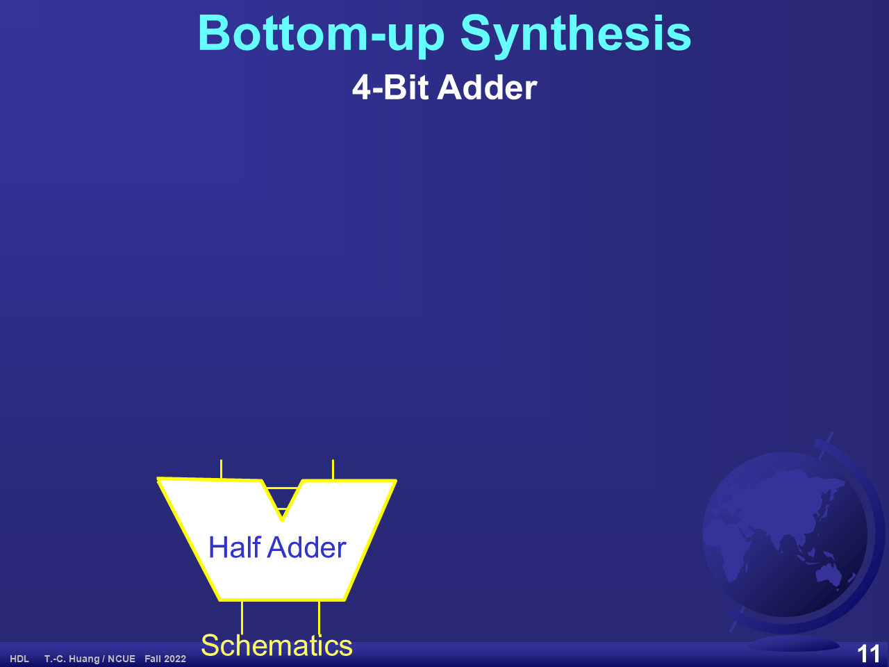
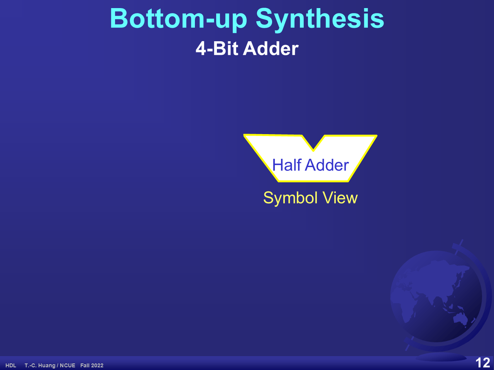
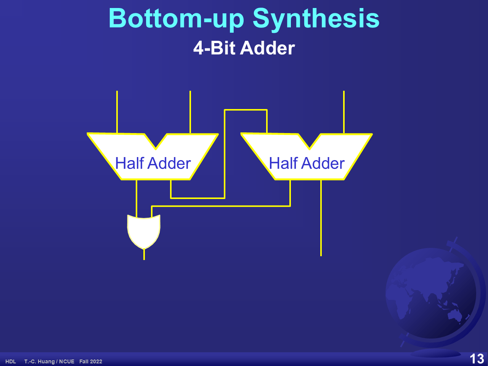
FA = HA + HA + OR。投影片 p.13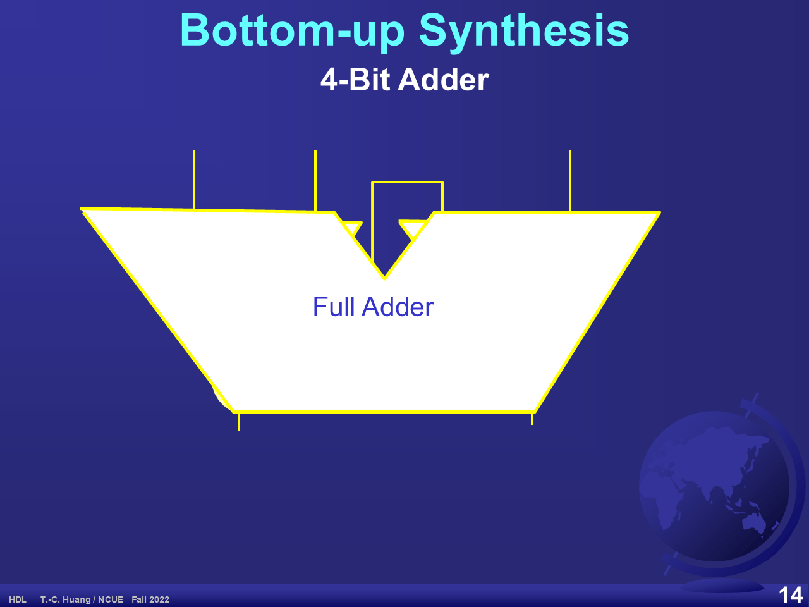
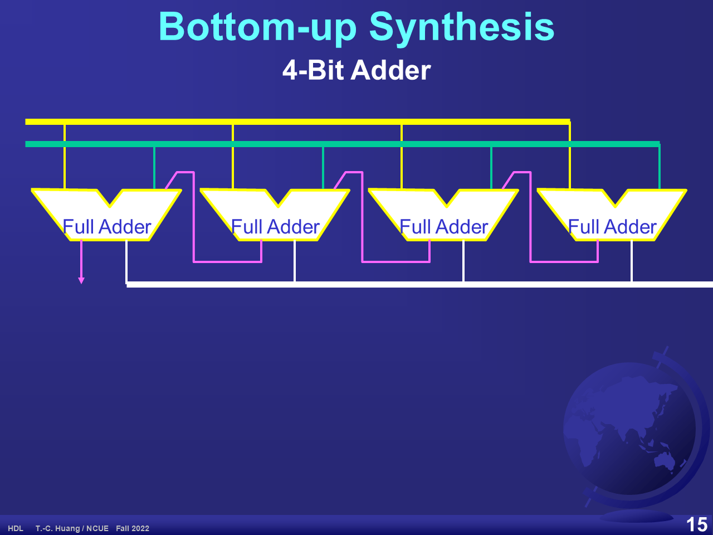
p.9 在投影片本身就有圖層重疊問題：AND 閘符號壓在 Can be found in physical library 文字上。p.11 與 p.14 的新符號也會蓋住前一步的內容，因為它們原本是動畫的後續分鏡。
這八步正好把 Y 圖的三個觀點走了一輪：實體 (p.8 佈局) → 結構 (p.10、p.13、p.15 的接線) → 符號／行為 (p.9、p.12、p.14 的抽象)。每一次「包裝成符號」，就是在 Y 圖上往外跳一個抽象層級。
2.8 攤平式合成
投影片 p.16
標題為 Flattened Synthesis / For Some example，標註 Physical View。圖是三排緊靠在一起的標準單元，排與排之間是橫向的金屬繞線通道，通道上有短的垂直接腳連到各單元。
| 列 | 單元（由左至右） |
|---|---|
| 第 1 列 | NAND、NOR、XOR、NOT、AOI、NOT、NAND、NAND |
| 第 2 列 | NAND、NOR、XOR、AOI、NOT、NOT、NAND、NAND |
| 第 3 列 | NAND、NAND、NAND、NOR、XOR、AOI、NOT、NOT |
教學重點：攤平 (flatten) 會把 §2.7 辛苦建立的階層全部丟掉，剩下的是一片沒有層次的程式庫單元海，照列擺放。
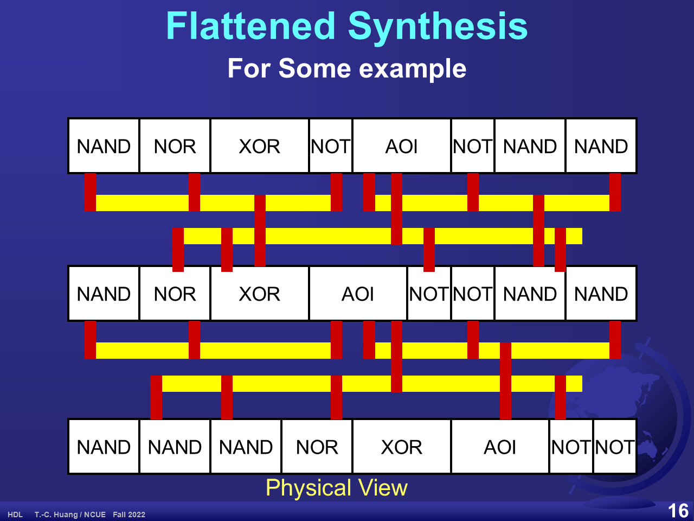
攤平不是壞事，而是取捨：丟掉階層後，合成器可以跨模組邊界做最佳化，常能得到更小更快的電路；代價是結果難以閱讀、難以除錯，也失去模組重用的好處。
2.9 Y 圖與理想 EDA 流程
投影片 p.17
這是本章的核心圖：Ideal EDA Flow along Y-Chart。三條軸是三個觀點，同心圓是抽象層級，畫在圓環上的弧線就是 EDA 工作。
下面是依投影片結構重畫的互動版。點選按鈕可以高亮對應的軸或流程弧線，並在下方看到說明。
請點選上方任一按鈕，圖上會高亮對應的軸、圓環或流程弧線。
投影片上出現的九個標籤
這張圖在投影片上只有九個字串：Behavioral、Structural、Physical、modularization、partitioning、library、synthesize、sim、ver。
投影片沒有為三個圓環命名（沒有寫「系統／演算法／RTL／邏輯／電路」之類的名稱），因此本網站也不替它們取名，只說明「離圓心越遠越抽象」。
整張圖的讀法：理想的 EDA 流程是螺旋向內的 — 先把行為描述模組化 (modularization)、分割 (partitioning)，再合成出結構 (synthesize)，接著落到實體，最後碰到圓心的程式庫 (library)；而 sim 與 ver 則是在每一步回頭驗證。這也解釋了為什麼第 01 章說「EDA 工具就是 Y 圖上的弧線」。
2.10 EDA 工具地圖的四種切法
投影片 p.18–21
這四張投影片用完全相同的 13 個工具方塊與 15 條箭頭，只換背景的分區方式，從四個角度解讀同一張 EDA 工具地圖。標題都是 VLSI Design Tools Supported by TSRI (CIC)。
13 個工具方塊
| 方塊 | 工具 |
|---|---|
| Schematic | Composer |
| Logic Simulator | VHDL, Verilog |
| Debugger | Debussy |
| FPGA Synthesis | ISE, Quartus |
| Synthesizer | Design Compiler |
| DFT | SynTest, Mentor |
| Place & Route | SE, Apollo, Astro |
| Layout Editor | Laker, Virtuoso |
| Physical Verify | Dracula, Calibre |
| Physical Extract | Calibre |
| STA | PrimeTime/Power |
| Circuit Simulator | SPICE, Spectre |
這些工具名稱是 2022 年的教材內容，其中 Debussy、Dracula、Apollo/Astro、Composer、ISE 多已是舊版或已更名。請當成歷史脈絡，不是現在的選型建議。
切法 1：依用途 — Syntheses 與 Analyses（p.18）
背景左右分區：左側棕色為 Syntheses（做出東西），右側藍色為 Analyses（檢查東西）。
| Syntheses（黃色方塊） | Analyses（粉紅方塊） |
|---|---|
| Schematic/Composer、FPGA Synthesis、Synthesizer、DFT、Place & Route、Layout Editor | Logic Simulator、Debugger、Physical Verify、Physical Extract、STA、Circuit Simulator |
主要流向（15 條連接線的整理）：Schematic → Synthesizer，也 → FPGA Synthesis（FPGA Synthesis 再回饋 Synthesizer）；主脊是 Synthesizer → DFT → Place & Route → Layout Editor；Logic Simulator ↔ Debugger 雙向，且 Logic Simulator 回到 Schematic 層並往下接 Synthesizer 與 DFT；Layout Editor → Physical Extract → STA；Physical Extract → Physical Verify；Circuit Simulator → 回到 Layout Editor。
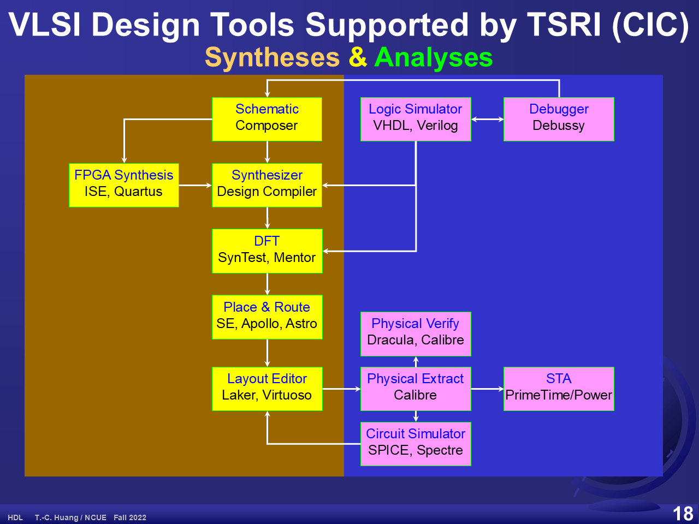
切法 2：前段與後段（p.19）
同樣的方塊與箭頭，背景改成一條由右上到左下的對角線：上／左為 Front-end，下／右為 Back-end。Schematic、Logic Simulator、Debugger、FPGA Synthesis、Synthesizer、DFT 落在前段；Place & Route、Layout Editor、Physical Verify、Physical Extract、STA、Circuit Simulator 落在後段，靠近對角線的方塊則跨在界線上。
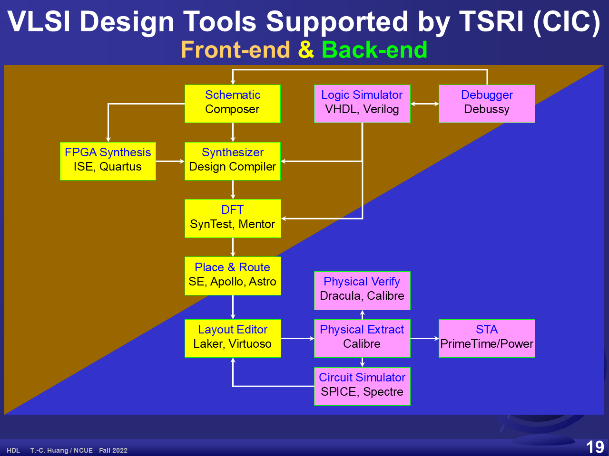
切法 3：依抽象層級（p.20）
背景改成三條由淺到深的綠色橫帶，代表抽象層級，這正是 §2.9 Y 圖的圓環那個座標。
| 帶 | 工具 |
|---|---|
| 上帶 | Schematic/Composer、Logic Simulator、Debugger、FPGA Synthesis、Synthesizer |
| 中帶 | DFT、Place & Route、Physical Verify |
| 下帶 | Layout Editor、Physical Extract、STA、Circuit Simulator |
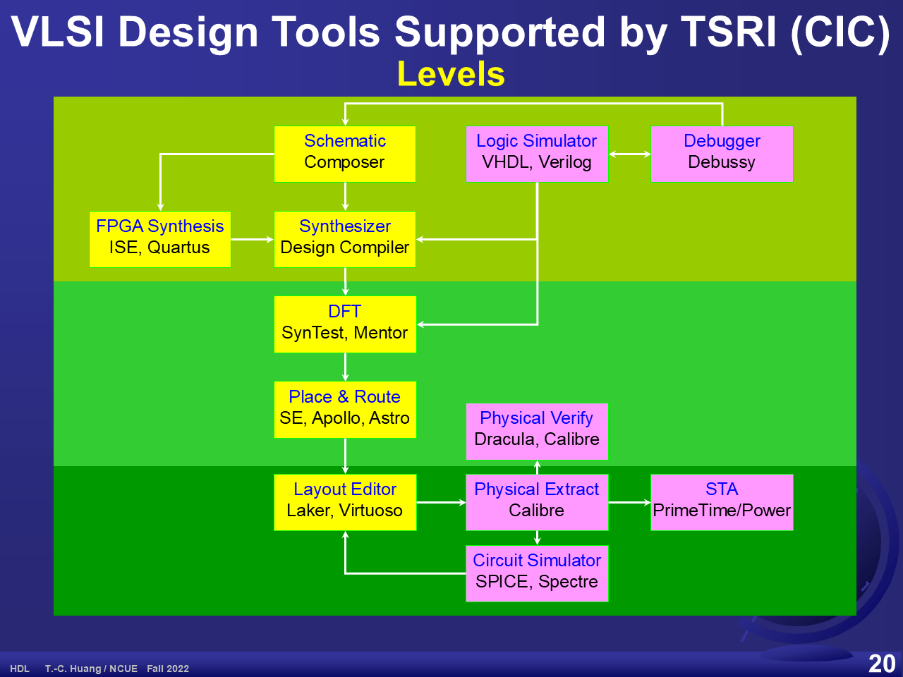
切法 4：依觀點（p.21）
這是收尾的一頁：背景不分區，改在工具地圖上疊三條虛線箭頭，從上方同一點散開，分別指向 S（Structural）、B（Behavioral）、P（Physical）。把 p.18–20 的具體工具流程，接回 §2.9 Y 圖的三個觀點。
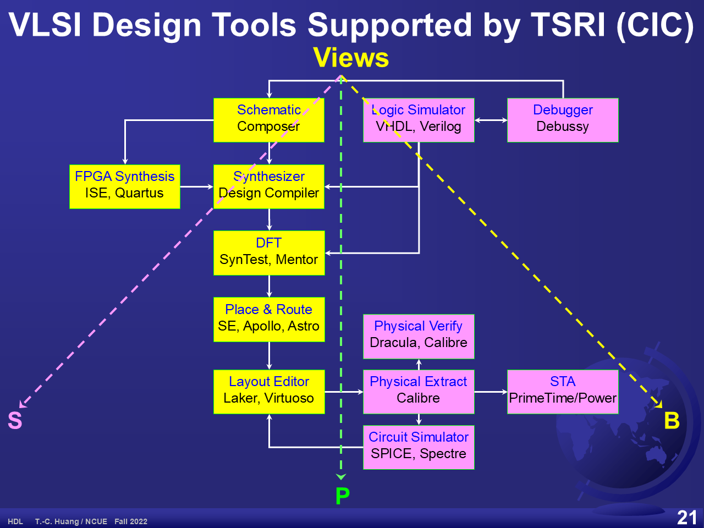
2.11 Lab02 正反器
投影片 p.22
- Latches and Flip-Flops（閂鎖器與正反器）
- Gate-Level and Behavioral Models（閘級模型與行為模型）
- Implement blocking ( = ) by latches and non-blocking ( <= ) by FFs in Quartus II.
- Simulated Clock Generator（模擬用的時脈產生器）
reg Clk;
initial Clk = 0;
always #half_period Clk = !Clk;兩道練習題：
- Problem 1: How to Convert btw DFF, JK-FF, RS-FF, and TFF?（四種正反器之間如何互換？）
- Problem 2: Complete all possible combinations for this lab.（把這個實驗所有可能的組合都做完。）
這個實驗的核心觀念是：在 always 區塊裡用阻塞指定 = 會合成出閂鎖器行為，用非阻塞指定 <= 才會合成出正反器。第 03 章 §3 會詳細討論兩者差別。
重點整理
- 樹與嵌套區塊是同一個階層關係的兩種畫法，對應 Verilog 的模組實體化。
- Testbench 不需要可合成：左端用
initial產生訊號，右端用$display／$monitor／波形觀察，中間才是要合成的硬體。 - Bottom-up 累積可重用的程式庫，Top-down 縮短設計週期（投影片稱 Top-down 為 Ideal EDA Flow）；實務上多採 Middle-out／Ends-In／Hybrid。
- 攤平會爆炸：4 位元加法器有 9 個輸入，真值表就有 29 = 512 列，所以必須用階層。
- 由上而下是「行為式 → 結構分解」的遞迴，一直展到程式庫單元 (AND、XOR) 才停。
- 由下而上的八步示範了抽象的累積：佈局 → 標準單元 → 符號 → 閘級電路 → 半加器 → 全加器 → 漣波進位鏈；每次「包裝成符號」就往外跳一個抽象層級。
- Y 圖的兩個座標：三條軸是觀點 (Behavioral／Structural／Physical)，同心圓是抽象層級，離圓心越遠越抽象，圓心是 library。
- 理想 EDA 流程是螺旋向內：modularization → partitioning → synthesize → 實體 → library，而 sim 與 ver 在每一步回頭檢查。
- 同一張工具地圖可以切四次：依用途（合成／分析）、依前後段、依層級、依觀點 — 最後一刀正好接回 Y 圖。
關鍵術語
- 階層 hierarchy
- 把設計分層包裝的關係，可畫成樹或嵌套區塊。投影片 p.3
- 測試平台 testbench / testfixture
- 包住待測電路、負責產生刺激並觀察輸出的模擬環境，本身不需可合成。投影片 p.4
- 由上而下 top-down
- 先定系統行為再逐層分解；縮短設計週期，但模組要切得好。投影片 p.5
- 由下而上 bottom-up
- 先建底層元件再往上組裝；有利長期累積程式庫。投影片 p.5
- 標準單元 standard cell
- 程式庫中已完成實體佈局、可直接擺放繞線的基本單元。投影片 p.9
- 符號觀點 symbol view
- 把內部結構隱藏起來、只留介面的表示法。投影片 p.12
- 漣波進位加法器 ripple-carry adder
- 把全加器串成一列、進位逐級傳遞的加法器。投影片 p.15
- 攤平 flatten
- 丟棄階層、把整個設計化為單一層的程式庫單元集合。投影片 p.16
- Y 圖 Y-chart
- 以三軸表示觀點、同心圓表示抽象層級的設計空間圖。投影片 p.17
- 合成 synthesize
- 把較抽象的描述轉成較低層結構的 EDA 工作，在 Y 圖上由結構軸往實體軸移動。投影片 p.17
- 靜態時序分析 STA
- 不做模擬、直接分析電路路徑延遲是否滿足時序的工具（PrimeTime）。投影片 p.18
- 可測試性設計 DFT
- 為了讓晶片容易測試而加入電路結構的設計階段。投影片 p.18
完整詞條見全站術語表。